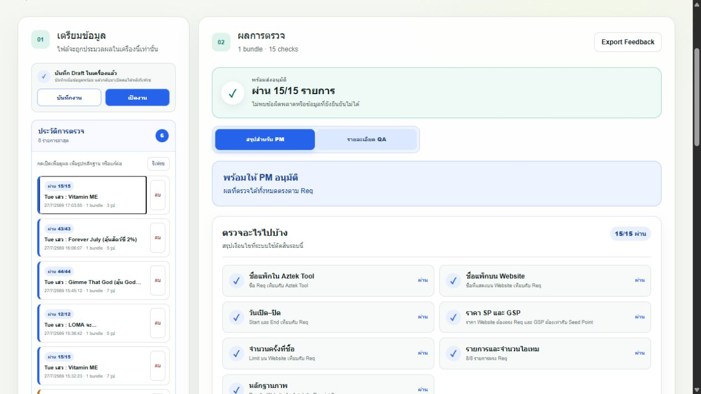

Pack QA
Checker
รวม Req, ภาพ Website, Aztek Tool และ Receipt ให้กลายเป็นผลตรวจที่ PM อ่านจบได้ในหน้าเดียว
Release confidence, with evidence
ปัญหาไม่ใช่แค่ข้อมูลผิด — แต่คือหลักฐานกระจายและต้องไล่เช็กซ้ำ
แหล่งข้อมูลที่ต้องเทียบกันก่อนอนุมัติแพ็กหนึ่งงาน
เริ่มตรวจจากหน้าจอเดียว ไม่ต้องเตรียม YAML เอง
OCR ช่วยกรอก — คนยืนยันเฉพาะจุดที่อ่านไม่ชัด
PM เห็นคำตอบก่อน: ผ่านอะไร และยังติดตรงไหน
ถ้าต้องสืบต่อ QA เปิด Expected, Actual และแหล่งที่มาได้ทันที
งานยังไม่ครบวันนี้ เปิดกลับมาเพิ่มรูปและคำนวณผลใหม่ได้
ผลตรวจไม่แยกจากหลักฐาน — PM กดเปิดภาพต้นฉบับได้จาก Summary


Receipt แนบเพิ่มได้สูงสุด 10 รูปเพื่อให้ PM ตรวจยืนยันการซื้อจริง โดยยังไม่บังคับ OCR ในระยะ Pilot
หลังบ้านแยก “การอ่านข้อมูล” ออกจาก “การตัดสินผล”
รับ Excel, Website OCR, Aztek Tool และข้อมูลยืนยันจากคน
จัดทุก source ให้อยู่ในโครงสร้างแพ็กเดียว พร้อม provenance
ตรวจ cross-source และ invariant โดยไม่รู้จักรูปหรือ Excel
แสดงผลสำหรับ PM/QA และบันทึก revision ย้อนกลับได้
ระบบเลือกวิธีตรวจตามทรงของแพ็ก ไม่ใช้กฎเดียวครอบทุกกรณี
Normal Pack
เทียบชื่อ ราคา Limit และรายการไอเทมกับ Req แบบตรงตัว
Random Pack
รวมหลายภาพเป็นแพ็กเดียว ตรวจ Fixed item, outcome และผลรวม Chance 100%
Permanent Pack
รองรับแพ็กไม่มีวันจบ และตรวจการตั้งค่า Aztek Tool ตามประเภทงาน
Pilot วันนี้ลดงานไล่เช็ก โดยยังให้ PM เป็นผู้อนุมัติสุดท้าย
ขอบเขตที่ตั้งใจ
ระบบเป็นตัวช่วยตรวจและจัดหลักฐาน ไม่ได้แทนวิจารณญาณ PM และยังคง Excel เป็นเอกสารอนุมัติหลักใน Phase 1
เป้าหมายรอบใช้งานจริง: เก็บ feedback เรื่องเวลาที่ประหยัด จุดที่ OCR ยังอ่านพลาด และขั้นตอนที่ผู้ใช้ยังต้องกดมากเกินไป
ให้ PM ใช้เวลาตัดสินใจ
ไม่ใช่ใช้เวลาไล่หาหลักฐาน
Pack QA Checker รวบรวม อ่าน เทียบ และชี้จุดที่ต้องดูต่อ — พร้อมเก็บร่องรอยให้ตรวจย้อนหลังได้